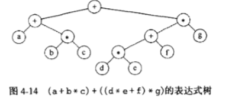
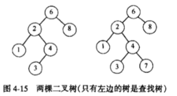

树中的相关概念
基本概念
树叶：
没有儿子的节点称为树叶
兄弟：
具有相同父亲的节点为兄弟
从节点n1到nk的路径定义为节点n1,n2···，nk的一个序列，使得对于1<= i <k节点ni是ni+1的父亲。
这条路径的长是该路径上的边的条数，即k-1。
深度：
ni的深度是从根到ni的唯一的路径的长
高：
是从ni到一片树叶的最长路径的长

在上面这个树中，E的深度为1，高度为2，F的深度为1，高度也为1，这个树的高度为3，一棵树的深度等于它最深的树叶的高度，该深度总等于树的高度。
树的节点定义
1 | class TreeNode{ |
遍历策略：
先序遍历、中序遍历、后序遍历。
二叉树：
是一棵树，其中每个节点都不能多于两个儿子
1 | class BinaryNode{ |
表达式树：表达式树的树叶是操作数，节点为操作符

中序遍历：(a + b * c) + ((d * e + f) * g)
后序遍历：a b c * + d e * f + g * +
先序遍历：+ + a * b c * + * d e f g
构造表达式树
二叉树转二叉查找树：形入下图，对于树中的每个节点X,他的左子树中所有项的值小于X,而右子树中所有相的值大于X中的项。二叉查找树要求所有项都能够排序。

AVL树：AVL树是带有平衡条件的二叉查找树。一棵AVL树是其每个节点的左子树和右子树的高度最多差1的二叉查找树
B树：具有一下特性
- 数据项存储在树叶上
- 非叶节点存储直到M-1个关键字以指示搜索的方向；关键字i代表i+1中的最小的关键字
- 树的根或者是一片树叶，或者其额日子数在2和M之间
- 除根外，所有非树叶节点的儿子数在M/2和M之间
- 所有的树叶都在相同的深度上并有L/2和L之间个数据项
满二叉树和完全二叉树

计算机中的树

各种树的时间空间复杂度
| 空间 | 搜索 | 插入 | 删除 | ||
|---|---|---|---|---|---|
| 二叉查找树 | 平衡 | O(n) | O(log n) | O(log n) | O(log n) |
| 最差 | O(n) | O(n) | O(n) | O(n) | |
| AVL树 | 平衡 | O(n) | O(log n) | O(log n) | O(log n) |
| 最差 | O(n) | O(log n) | O(log n) | O(log n) | |
| 红黑树 | 平衡 | O(log n) | O(log n) | O(log n) | O(log n) |
| 最差 | O(log n) | O(log n) | O(log n) | O(log n) |
平衡二叉树
性质：
- 树的左右高度差不能超过1；
- 任何往下递归的左子树与右子树，必须符合性质1；
- 没有任何节点的空树或只有根节点的树也是平衡二叉树。
二叉查找树
性质：
- 若任意节点的左子树不为空，则左子树上所有节点的值均小于它的根节点的值；
- 若任意节点的右子树不空，则右子树上所有节点的值均大于或等于它的根节点的值；
- 任意节点的左、右子树也分别为二叉查找树；
AVL树
AVL树是一种平衡二叉查找树，增加和删除节点通过树形旋转重新达到平衡。右旋是以某个节点为中心，将它沉入当前右子节点的位置，而让当前的左子节点作为新树的根节点，也称为顺时针旋转。
红黑树
性质：
- 节点时红色或黑色；
- 根节点必须是黑色；
- 所有叶子都是黑色(叶子是NIL节点：叶子节点下挂的两个虚节点)；
- 每个红色节点必须有两个黑色的子节点(从每个叶子到根的所有路径上不能有两个连续的红色节点)；
- 在任何递归子树内，根节点到子节点的所有路径上包含相同数目的黑色节点。
AVL树和红黑树
红黑树的平衡性并不如AVL树，它维持的只是一种大致的平衡，并不严格保证左右子树的高度不超过1。所以平均查找次数会高于相同情况下的AVL树。在插入时，红黑树和AVL树能在至多两次旋转内恢复平衡。在删除时，至多三次旋转内恢复平衡，而AVL树至多需要O(log n)次旋转。AVL树在插入与删除时，将向上回溯确定是否需要旋转，这个回溯的成本最差可能为O(log n)，而红黑树每次向上回溯的步长为2，回溯成本低。因此面对频繁的插入和和删除，红黑树更适合；面对低频修改、大量查询时，AVL树将更为合适。